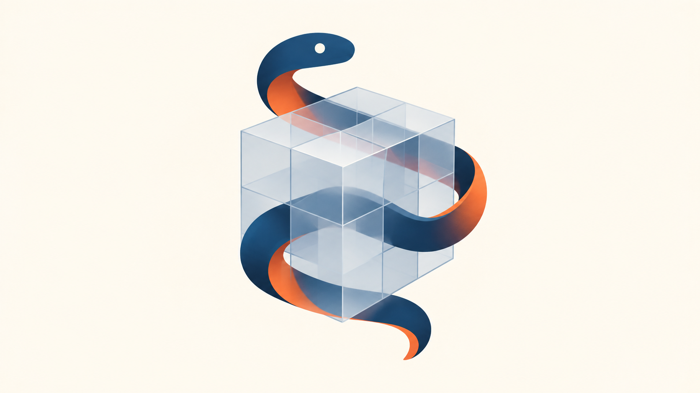

Building Training Systems with PyTorch
From tensors to a reusable Fashion-MNIST classifier
Dr. A. Belcaid
Building training systems with PyTorch
CHAPTER 06 · PYTORCH FUNDAMENTALS
From tensors to a reusable Fashion-MNIST classifier
Learn the framework by using it: inspect tensors, build an MLP, train it, evaluate it, and save what works.
Dr. A. Belcaid

Frame this as a practical working session. Students already know the mathematical ingredients of learning; this chapter teaches how PyTorch represents and coordinates them. The Fashion-MNIST MLP is the recurring system, but the first half deliberately builds tensor fluency through many small executable examples before assembling a model.
Today’s build: tensor → trained system
01
From NumPy to PyTorch
02
Tensor fluency
03
Autograd
04
Models as nn.Module
05
Data pipeline
06
Train and validate
07
Reusable system
Use the seven stages as a contract for the 1h30 session. Sections 1 and 2 establish fluency rather than rushing toward broadcasting. Section 3 retrieves backpropagation through a tiny transparent example. Sections 4–7 progressively assemble the Fashion-MNIST system: hypothesis, data, optimization, evaluation, and persistence. Explicitly state that convolution is reserved for the vision chapter.
01 · From NumPy to PyTorch
One image, two array objects
# Begin with one 28 × 28 grayscale image
import numpy as np
pixels = np.zeros((28, 28), dtype=np.float32)
# Wrap the same numerical storage as a tensor
import torch
image = torch.from_numpy(pixels)
# The familiar array contract is still visible
image.shape, image.dtype
# (torch.Size([28, 28]), torch.float32)Sequence adapted from Stanford CS224N · PyTorch Tutorial; image example adapted for Fashion-MNIST.
Start from an object students already know. Run the three blocks in order. Do not define tensors abstractly first: let the preserved shape and dtype provide the evidence. Mention that gradients and devices are promises for later sections, not topics to unpack yet.
A tensor carries data and a contract
image.shape image.dtype image.device
Properties follow Stanford CS224N · Tensor Properties.
Treat this as a debugging habit, not vocabulary to memorize. Shape gives axis sizes, dtype controls representation and valid operations, device controls the processor and memory holding the values. A single Fashion-MNIST sample has no channel axis after ToTensor conventions are introduced later; here we deliberately use a simple 28 by 28 array.
Create tensors from explicit values
# A vector of four measurements
x = torch.tensor([0.2, 0.7, 0.1, 0.9])
# Nested lists create another axis
batch = torch.tensor([[0.2, 0.7],
[0.1, 0.9]])
# State the dtype when the role requires it
labels = torch.tensor([9, 0, 3], dtype=torch.long)
# Convert an existing tensor explicitly
pixels = labels.float()long.
Examples adapted from Stanford CS224N · From a Python List.
Reveal one code block and its matching rule together. Stress semantic dtype: class labels are indices consumed by cross entropy, not measured quantities. Avoid cataloguing every dtype.
Create tensors by describing the values
# Start an empty image
canvas = torch.zeros(28, 28)all 0
# Start a mask that keeps every pixel
mask = torch.ones(28, 28)all 1
# Fill a tensor with one chosen value
midgray = torch.full((28, 28), 0.5)all 0.5
# Draw initial values uniformly from [0, 1)
noise = torch.rand(28, 28)uniform
# Draw initial values from a standard normal
weights = torch.randn(784, 128)normal
# Generate an integer sequence
classes = torch.arange(10)0 … 9tensor. Shape known? Use a factory. Sequence needed? Use arange.
Factory sequence follows Stanford CS224N · Tensor Initialization.
Move quickly but run every line. The comments name intent rather than repeat syntax. Connect randn to future weight initialization without teaching initialization theory again. Mention that random values change between runs unless the generator is seeded.
Match an existing tensor’s contract
# A mini-batch already has the right contract
images = torch.rand(64, 1, 28, 28, device=device)
# Create zeros with the same shape, dtype, and device
accumulator = torch.zeros_like(images)
# Create random values with the same contract
perturbed = images + 0.01 * torch.randn_like(images)_like preserve?
Pattern adapted from Stanford CS224N · From a Tensor.
This is the first batch-shaped example. Name the axes without expanding into indexing: batch, channel, height, width. Emphasize that like-factories are robust code because they inherit the relevant contract.
NumPy conversion: shared storage or copy?
# from_numpy reuses compatible NumPy storage
a = np.array([1., 2., 3.], dtype=np.float32)
t_shared = torch.from_numpy(a)
# A mutation is visible through both objects
a[0] = 99.
t_shared
# tensor([99., 2., 3.])
# tensor constructs independent storage
t_copy = torch.tensor(a)Conversion introduced in Stanford CS224N · From a NumPy Array; sharing behavior: official PyTorch documentation.
Ask students to predict t_shared before revealing the output. Clarify that from_numpy shares supported CPU storage and the returned tensor is not resizable. The deliberate choice—not memorizing a slogan—is the point.
Section 1 checkpoint: choose the constructor
torch.tensor([2, 4, 7], dtype=torch.long)
torch.zeros(64, 1, 28, 28)
torch.ones_like(images)
torch.from_numpy(array)
Constructor repertoire synthesized from Stanford CS224N · Tensor Initialization.
Use this as retrieval: read each situation and ask the room for the constructor before revealing it. This closes creation cleanly and sets the boundary for Section 2, where operations begin.
02 · Tensor fluency
Indexing selects; slicing preserves structure
# Three samples, four features each
x = torch.tensor([[10, 11, 12, 13],
[20, 21, 22, 23],
[30, 31, 32, 33]])
# Integer index: select one row
x[1] # shape (4,) → [20, 21, 22, 23]
# Two integer indices: select one scalar
x[1, 2] # shape () → 22
# A length-one slice keeps the row axis
x[1:2] # shape (1, 4)x[row, column].
Examples follow Stanford CS224N · Tensor Indexing.
Make students predict the shape before reading each comment. The important distinction is not brackets versus commas; it is whether an axis survives the selection.
Read a slice one axis at a time
# batch × channel × height × width
images = torch.zeros(64, 1, 28, 28)
# First eight images; keep every other axis
small_batch = images[:8]
# Crop rows 4…23 and columns 6…21
crop = images[:, :, 4:24, 6:22]
# Sample every second column
stripes = images[:, :, :, ::2]
# Ellipsis means “all omitted middle axes”
last_column = images[..., -1]:all entries
a:bstart included, stop excluded
::stake every s-th entry
-1last entry on that axis
…fill omitted axes with :
Syntax adapted from Stanford CS224N · Tensor Indexing.
Read every expression aloud from left to right. The stop is exclusive, exactly as in Python and NumPy. PyTorch does not support negative slice steps; use torch.flip when reversal is required.
A Boolean mask keeps matching elements
shape (3,)
# Confidence for five predictions
confidence = torch.tensor([
0.91, 0.42, 0.77, 0.18, 0.83
])
# Compare every value with the threshold
keep = confidence >= 0.75
# tensor([ True, False, True, False, True])
# Keep values aligned with True mask entries
selected = confidence[keep]
# tensor([0.91, 0.77, 0.83])True entries.
Boolean masking follows Stanford CS224N · Tensor Indexing.
Keep attention on the code. Use the left diagram only to trace the three lines: five confidence values, five aligned mask positions, then three selected values. Black means True and white means False.
Reshape reorganizes the same values
image.reshape(784)→
images.reshape(64, -1) →
Sequence adapted from Stanford CS224N · Shape.
Trace the first few pixel cells from the square into the strip: values do not change and are not recomputed. In the batch example, 64 remains the sample axis; only the three image axes are collapsed. Explain that -1 asks PyTorch to infer 784 from the conserved element count.
Add, remove, or reorder axes
unsqueeze(0)
squeeze(1)
transpose(0, 1)
permute(0, 2, 3, 1)
squeeze and unsqueeze follow Stanford CS224N · Shape.
Walk through the pictures before reading the method names. Unsqueeze wraps a plane in a new size-one sleeve; squeeze removes only that sleeve. Transpose swaps two directions. Permute states the complete new axis order. Warn that squeeze() with no dimension can also remove a batch axis of size one.
Elementwise multiplication is not matrix multiplication
ELEMENTWISE
Same-position values interact.
batch @ W: (64, 784) @ (784, 128) → (64, 128)
Syntax follows Stanford CS224N · Operations.
Ask which dimension disappears and which survives in the future layer. Retrieve the linear algebra; spend the slide time on reading tensor shapes.
Reductions answer a question along an axis
dim=0collapse rows ↓
dim=1collapse columns →
dim=(0, 1)collapse both axes
# Three samples, four class scores each
scores = torch.tensor([[2., 1., 0., 3.],
[1., 4., 2., 0.],
[3., 2., 5., 1.]])
# dim=0: combine the three samples
scores.mean(dim=0)
# tensor([2.00, 2.33, 2.33, 1.33])
# dim=1: combine the four classes
scores.mean(dim=1)
# tensor([1.50, 1.75, 2.75])
# Both axes: combine all twelve values
scores.mean(dim=(0, 1))
# tensor(2.00)dim=0 leaves four columns; dim=1 leaves three rows; dim=(0, 1) leaves one scalar.
Examples adapted from Stanford CS224N · Operations.
Keep attention on the code and use the left panels to trace which direction collapses. Ask students to predict the surviving shape before reading each output. A tuple reduces several named axes in one operation.
Concatenate extends an axis; stack creates one
a.shape == (2, 3)
b.shape == (2, 3)
torch.cat([a, b], dim=0)(4, 3)
torch.stack([a, b], dim=0)(2, 2, 3)
cat keeps the number of axes; stack adds one axis.
cat follows Stanford CS224N · Operations; comparison extended for this course.
Concrete uses: cat joins mini-batches; stack collects same-shaped images into a mini-batch. Decide from the desired output shape.
Broadcasting aligns shapes from the right
# Add one scalar to every element
x = torch.tensor([1, 2, 3, 4])
y = x + 10
# tensor([11, 12, 13, 14])
# (4,) + () → (4,)# Add one bias value per column
x = torch.tensor([[1, 2, 3],
[4, 5, 6]])
bias = torch.tensor([10, 20, 30])
y = x + bias
# tensor([[11, 22, 33],
# [14, 25, 36]])
# (2, 3) + (3,) → (2, 3)# Add one offset per row
x = torch.tensor([[1, 2, 3],
[4, 5, 6]])
offset = torch.tensor([[100],
[200]])
y = x + offset
# tensor([[101, 102, 103],
# [204, 205, 206]])
# (2, 3) + (2, 1) → (2, 3)# One mean image for each channel
images.shape
# torch.Size([64, 3, 28, 28])
mean.shape
# torch.Size([3, 28, 28])
centered = images - mean
centered.shape
# torch.Size([64, 3, 28, 28])1; missing leading dimensions behave like 1.
Example extends Stanford CS224N · Operations; rules: PyTorch broadcasting semantics.
Advance through four complete examples. In every diagram, pause at the expanded view before applying the arithmetic. The final image-batch case omits values deliberately and makes the missing leading batch axis explicit.
A computation requires one device
# Choose the best available accelerator once
device = torch.device(
"cuda" if torch.cuda.is_available() else "cpu"
)
# Move every participant in the computation
images = images.to(device)
labels = labels.to(device)
model = model.to(device)
# NumPy consumes CPU tensors
array = images.detach().cpu().numpy()Workflow follows Stanford CS224N · Device and PyTorch device documentation.
Do not promise CUDA is present. The device variable makes the code portable. Explain detach only as removing autograd history before NumPy conversion; Section 3 gives it full meaning.
Section 2 checkpoint: read the contract first
images[:8, :, 4:24, 6:22](8, 1, 20, 16)
images.reshape(64, -1)(64, 784)
scores.argmax(dim=1)(64,)
torch.stack([a, b, c])(3, 1, 28, 28)
(64, 128) + (128,)(64, 128)
images.to(device)same shape · new location
Use this as a rapid oral checkpoint. Pause before reading each result. Predicting the tensor contract is the section outcome.
03 · Autograd
The forward pass records a computation graph
# Parameters ask autograd to track operations
w = torch.tensor(3., requires_grad=True)
b = torch.tensor(1., requires_grad=True)
# Data need not receive a gradient
x = torch.tensor(2.)
target = torch.tensor(10.)
# Executing operations constructs the graph
prediction = w * x + b
loss = (prediction - target) ** 2
loss, loss.grad_fn
# (tensor(9.), <PowBackward0>)Mechanism adapted from Stanford CS224N · Autograd and PyTorch · Automatic Differentiation.
Students know the chain rule. Focus on object state: requires_grad marks leaf parameters; each executed operation stores a grad_fn in the result. The graph is a record of this particular forward computation.
backward() sends gradients to leaf tensors
∂L/∂w = 2(prediction − target) · x
= 2(7 − 10) · 2 = −12
# Differentiate the scalar loss
loss.backward()
# Gradients accumulate on tracked leaves
w.grad
# tensor(-12.)
b.grad
# tensor(-6.)
# Intermediate results are not leaf tensors
prediction.is_leaf
# Falseloss.backward(), inspect .grad on the leaf parameters being optimized.
Gradient storage follows PyTorch · Computing Gradients.
Trace backward from the scalar root. Emphasize that backward computes and accumulates gradients; it does not update w or b. Non-leaf gradients are normally used internally and then released.
A batch becomes one scalar loss
# Three predictions produce three errors
prediction = torch.tensor(
[4., 3., 10.],
requires_grad=True
)
target = torch.tensor([3., 5., 7.])
# Reduce per-example losses to one objective
per_example = (prediction - target) ** 2
loss = per_example.mean()
per_example, loss
# (tensor([1., 4., 9.]), tensor(4.6667))
loss.backward()Scalar-loss convention: PyTorch · Tensor Gradients and Jacobian Products.
Connect back to reductions. backward() without an argument seeds a scalar output with gradient one. Vector outputs require an explicit gradient argument and compute a vector–Jacobian product; that is not needed in the ordinary training loop.
Gradients accumulate until you clear them
w = torch.tensor(2., requires_grad=True)
# First graph contributes gradient 4
(w ** 2).backward()
w.grad # tensor(4.)
# A new graph adds another gradient 4
(w ** 2).backward()
w.grad # tensor(8.)
# Clear before the next independent batch
w.grad.zero_()
w.grad # tensor(0.)Accumulation behavior follows PyTorch · More on Computational Graphs.
This is a stateful behavior, so show it explicitly. Each expression w**2 creates a fresh graph, but both backward calls add into the same leaf gradient buffer. Later the optimizer will provide zero_grad().
One complete regression update
x = torch.tensor([1., 2., 3.])
y = torch.tensor([3., 5., 7.])
w = torch.tensor(0., requires_grad=True)
b = torch.tensor(0., requires_grad=True)
prediction = w * x + b
loss = ((prediction - y) ** 2).mean()
loss.backward()
with torch.no_grad():
w -= 0.1 * w.grad
b -= 0.1 * b.grad
w.grad.zero_()
b.grad.zero_()Workflow adapted from Stanford CS224N · Autograd and PyTorch · Automatic Differentiation.
This is the bridge to nn.Module and optimizers. no_grad prevents the parameter update itself from joining the next graph. Verify the first gradients orally: w.grad = -22.667 and b.grad = -10, so learning rate 0.1 gives the displayed parameters.
04 · Models as nn.Module
The nn.Module contract
nn.Module is PyTorch’s base class for models and layers.
We implement only init and forward. The base class already provides parameter registration, device movement, training/evaluation modes, state handling, hooks, and the callable model(x) interface.
class MyModel(nn.Module):
def __init__(self):
super().__init__()
# Define the reusable layers
self.layers = ...
def forward(self, x):
# Define how data flows
output = ...
return outputclass FashionMLP(nn.Module):
def __init__(self):
super().__init__()
self.flatten = nn.Flatten()
self.network = nn.Sequential(
nn.Linear(28 * 28, 128),
nn.ReLU(),
nn.Linear(128, 10),
)
def forward(self, images):
x = self.flatten(images)
return self.network(x)Structure adapted from PyTorch · Build the Neural Network.
Start from the abstraction boundary, not the familiar neural-network diagram. Students supply the model’s owned pieces and computation; PyTorch supplies the surrounding model machinery. Then map each placeholder in the generic template to the Fashion-MNIST implementation. Mention that the final layer returns 10 logits and that CrossEntropyLoss will consume them later.
__init__ owns layers; forward uses them
class FashionMLP(nn.Module):
def __init__(self):
super().__init__()
# self.* registers each submodule
self.flatten = nn.Flatten()
self.network = nn.Sequential(
nn.Linear(784, 128),
nn.ReLU(),
nn.Linear(128, 10),
)
def forward(self, images):
# Temporary activations belong to this call
x = self.flatten(images)
return self.network(x)init defines owned components; forward defines the computation performed with them.
Module construction follows Stanford CS224N · Building a Neural Network.
Contrast parameters with temporary activations: layers belong to the object, whereas x is created anew for each batch. super().__init__ initializes Module’s registration machinery.
Call the model—do not call forward directly
model = FashionMLP()
images = torch.randn(64, 1, 28, 28)
# Call the Module object
logits = model(images)
images.shape
# torch.Size([64, 1, 28, 28])
logits.shape
# torch.Size([64, 10])
# This bypasses Module.__call__
logits = model.forward(images) # avoidmodel(batch). PyTorch’s call machinery then invokes your forward method.
Calling convention: PyTorch · nn.Module.
The 64 images remain independent. Raw logits are not probabilities and need not sum to one. Module.__call__ handles registered hooks and framework behavior around forward.
Registered layers expose registered parameters
Flatten and ReLU own no trainable tensors.
model = FashionMLP()
# Names reveal where each tensor lives
for name, parameter in model.named_parameters():
print(name, tuple(parameter.shape))
# network.0.weight (128, 784)
# network.0.bias (128,)
# network.2.weight (10, 128)
# network.2.bias (10,)
# The optimizer will receive these tensors
trainable = sum(
p.numel() for p in model.parameters()
)
trainable
# 101770Parameter iteration: PyTorch · nn.Module.
Calculate the total: 128×784 + 128 + 10×128 + 10 = 101,770. named_parameters is useful for debugging; parameters is normally passed to an optimizer.
Move the model and the batch together
device = (
"cuda"
if torch.cuda.is_available()
else "cpu"
)
model = FashionMLP().to(device)
images = images.to(device)
logits = model(images)
next(model.parameters()).device
# device(type='cuda', index=0)
logits.device
# device(type='cuda', index=0)Device workflow: PyTorch · Build the Neural Network.
This cashes out parameter registration. model.to(device) acts recursively because the layers were assigned as submodules. On a CPU machine the displayed device will be cpu.
05 · Data pipeline
Two objects, two responsibilities
Dataset
Owns samples and labels. Given one index, returns one example.
image, label = dataset[17]
DataLoader
Chooses indices, groups samples, optionally shuffles, and yields batches.
images, labels = next(iter(loader))
DATASET PROTOCOL len() How many examples? getitem(index) What is example index?
DATALOADER CONFIGURATION batch_size=64 How many examples per step? shuffle=True In what order this epoch?
Abstractions: PyTorch · Datasets & DataLoaders.
Keep the distinction crisp. A Dataset answers questions about one indexed example; a DataLoader controls how examples arrive during iteration. The model should not know filenames, shuffling, or batching policy.
Load the same task as two dataset splits
from torchvision import datasets
from torchvision.transforms import v2
transform = v2.Compose([
v2.ToImage(),
v2.ToDtype(torch.float32, scale=True),
])
train_data = datasets.FashionMNIST(
root="data", train=True, download=True,
transform=transform,
)
test_data = datasets.FashionMNIST(
root="data", train=False, download=True,
transform=transform,
)rootwhere files live
train60k train or 10k test
downloadfetch only if missing
transformimage → float tensor
Dataset construction follows PyTorch · Quickstart.
Walk through the arguments rather than reteaching Fashion-MNIST. The modern v2 transform first makes a torchvision image and then converts it to float32 while scaling byte values to [0,1]. The split flag is the only semantic difference between these two objects.
Inspect one sample before batching anything
class_names = [
"T-shirt/top", "Trouser", "Pullover",
"Dress", "Coat", "Sandal",
"Shirt", "Sneaker", "Bag",
"Ankle boot",
]
image, label = train_data[0]
image.shape, image.dtype
# (torch.Size([1, 28, 28]), torch.float32)
label, class_names[label]
# (6, 'Shirt')
image.min(), image.max()
# (tensor(0.), tensor(1.))Fashion-MNIST sample contract: PyTorch · Datasets & DataLoaders.
This is the data equivalent of inspecting tensor contracts. The channel axis is present even for grayscale images. The label is an integer index because CrossEntropyLoss expects class indices, not one-hot vectors.
DataLoader redraws the order, then forms batches
train_loader = DataLoader(train_data, batch_size=4, shuffle=True)
shuffle=Truenew order each epoch
shuffle=Falsestable order for evaluation
drop_last=Falsemay contain fewer samples
Loading semantics: PyTorch · torch.utils.data.
Here the visual earns its space: it explains that shuffling changes the index order, not the stored Dataset, and batching then chunks that order. With 60,000 examples and batch size 64, the final training batch has 32 examples unless drop_last=True.
The training loop receives tensors—not samples
from torch.utils.data import DataLoader
train_loader = DataLoader(
train_data,
batch_size=64,
shuffle=True,
)
for images, labels in train_loader:
images = images.to(device)
labels = labels.to(device)
logits = model(images)
break
images.shape # torch.Size([64, 1, 28, 28])
labels.shape # torch.Size([64])
logits.shape # torch.Size([64, 10])(B, 1, 28, 28)
(B, 10)
(B,)
B is the current batch size—not necessarily always 64.
Iteration pattern: PyTorch · Datasets & DataLoaders.
This is the bridge to optimization. Stress B rather than 64 because the final batch can be smaller. Moving images and labels happens inside the loop; the Dataset normally remains in host memory. The next section will replace break with loss, backward, and optimizer steps.
06 · Train and validate
Choose what to minimize—and how to move
nn.CrossEntropyLoss
Compares the model’s logits with integer class labels.
(B, 10) + (B,) → ()
torch.optim.SGD
Uses registered parameter gradients to change the model.
parameters + lr=1e-3
loss_fn = nn.CrossEntropyLoss()
optimizer = torch.optim.SGD(
model.parameters(),
lr=1e-3,
)
logits = model(images) # (B, 10)
loss = loss_fn(logits, labels)
loss.shape # torch.Size([])CrossEntropyLoss applies the required log-softmax internally; do not add softmax to the model.
Loss and optimizer setup: PyTorch · Optimizing Model Parameters.
Connect to the five-part frame: the model is the hypothesis, CrossEntropyLoss is the objective, and SGD is the optimization rule. The loss reduces a batch to the scalar root needed by backward.
One batch performs one parameter update
.grad
images = images.to(device)
labels = labels.to(device)
# 1 · Start this batch with empty gradients
optimizer.zero_grad()
# 2–3 · Build the graph and its scalar loss
logits = model(images)
loss = loss_fn(logits, labels)
# 4 · Differentiate the current graph
loss.backward()
# 5 · Use gradients to change parameters
optimizer.step()zero_grad → forward → loss → backward → stepChanging this order changes the computation.
Training-step order: PyTorch · Optimization Loop.
Retrieve the manual regression update from autograd, then show what the optimizer encapsulates. zero_grad may also be placed after step if it is guaranteed to run before the next backward; this lecture uses the start-of-batch convention because its state is explicit.
Package the training behavior for one epoch
INPUTS modelloaderloss_fnoptimizerdevice ↓ iterate over every batch ↓ OUTPUT mean training loss The function mutates model parameters.
def train_one_epoch(model, loader, loss_fn, optimizer, device):
model.train()
total_loss = 0.0
for images, labels in loader:
images = images.to(device)
labels = labels.to(device)
optimizer.zero_grad()
logits = model(images)
loss = loss_fn(logits, labels)
loss.backward()
optimizer.step()
total_loss += loss.item() * images.size(0)
return total_loss / len(loader.dataset)model.train()Set training behavior explicitly at the start of the function—even when today’s MLP has no dropout or batch normalization.
Epoch structure adapted from PyTorch · Full Implementation.
The explicit function boundary makes mutation visible: parameters change, and the returned value is only a summary. Multiplying mean batch loss by batch size prepares an example-weighted epoch average, which matters when the last batch is smaller.
Validation changes state—but never parameters
model.train()gradients enabledoptimizer.step()parameters change
model.eval()torch.inference_mode()no optimizerparameters stay fixed
def validate(model, loader, loss_fn, device):
model.eval()
total_loss, total_correct = 0.0, 0
with torch.inference_mode():
for images, labels in loader:
images = images.to(device)
labels = labels.to(device)
logits = model(images)
total_loss += loss_fn(logits, labels).item() * images.size(0)
total_correct += (logits.argmax(dim=1) == labels).sum().item()
n = len(loader.dataset)
return total_loss / n, total_correct / nEvaluation pattern: PyTorch · Quickstart.
Separate the two independent switches. eval changes module behavior such as dropout and batch normalization; inference_mode disables autograd work. Neither one updates parameters. They are both worth using even though this first MLP behaves identically in train and eval mode.
Average over examples—not over batches
mean loss = 0.50loss sum = 32.0
mean loss = 1.00loss sum = 16.0
(0.50 + 1.00) / 2 = 0.75
(32 + 16) / 80 = 0.60
total_loss = 0.0
total_correct = 0
for images, labels in loader:
logits = model(images)
loss = loss_fn(logits, labels)
batch_size = images.size(0)
total_loss += loss.item() * batch_size
total_correct += (
logits.argmax(dim=1) == labels
).sum().item()
n = len(loader.dataset)
mean_loss = total_loss / n
accuracy = total_correct / nMetric loop extends PyTorch · Optimizing Model Parameters.
This numerical counterexample motivates the accumulation rule. It applies whenever reduction=‘mean’ produces each batch loss. Accuracy already counts correct examples, so only divide the total count once at the end.
07 · Reusable system
The outer loop coordinates complete epochs
epochs = 10
for epoch in range(1, epochs + 1):
train_loss = train_one_epoch(
model, train_loader, loss_fn, optimizer, device
)
val_loss, val_accuracy = validate(
model, test_loader, loss_fn, device
)
print(
f"epoch {epoch:02d} | "
f"train loss {train_loss:.4f} | "
f"val loss {val_loss:.4f} | "
f"val accuracy {val_accuracy:.1%}"
)
# epoch 01 | train loss 1.8742 | val loss 1.6128 | val accuracy 42.7%
# ...
# epoch 10 | train loss 0.5216 | val loss 0.5489 | val accuracy 80.4%Driver structure adapted from PyTorch · Optimizing Model Parameters.
This loop is deliberately boring: orchestration should be easy to read because the complicated behavior lives in named functions. Validation follows training once per epoch; it does not participate in gradient updates.
Keep the best validation state—not merely the last
The test/validation signal chooses among training states; it must never call optimizer.step().
best_val_loss = float("inf")
for epoch in range(1, epochs + 1):
train_loss = train_one_epoch(
model, train_loader, loss_fn, optimizer, device
)
val_loss, val_accuracy = validate(
model, test_loader, loss_fn, device
)
if val_loss < best_val_loss:
best_val_loss = val_loss
torch.save(
model.state_dict(),
"fashion_mlp.pth",
)State saving follows PyTorch · Saving and Loading Models.
Use validation loss for the example because it is continuous and aligns with the objective. In a real project choose the selection metric before training. This simple checkpoint stores only inference weights; resuming training would also require optimizer state and epoch metadata.
A state_dict stores values—not the architecture
state = model.state_dict()
state.keys()
# odict_keys([
# 'network.0.weight',
# 'network.0.bias',
# 'network.2.weight',
# 'network.2.bias'
# ])
torch.save(state, "fashion_mlp.pth")# Architecture comes from Python code
restored = FashionMLP().to(device)
# The file supplies matching tensor values
state = torch.load(
"fashion_mlp.pth",
map_location=device,
weights_only=True,
)
restored.load_state_dict(state)
# <All keys matched successfully>
restored.eval()Recommended pattern: PyTorch · Save and Load the Model.
This reconnects to registered parameters. state_dict keys mirror the module tree seen earlier. Recreate the architecture first, then load values into it. weights_only=True limits loading to tensor state, and map_location makes the file portable across devices.
Inference is a small, explicit pipeline
prediction: Shirt target: Shirt
model = FashionMLP().to(device)
state = torch.load(
"fashion_mlp.pth",
map_location=device,
weights_only=True,
)
model.load_state_dict(state)
model.eval()
image, target = test_data[0]
image = image.unsqueeze(0).to(device)
with torch.inference_mode():
logits = model(image)
predicted = logits.argmax(dim=1).item()
class_names[predicted], class_names[target]
# ('Shirt', 'Shirt')Inference workflow adapted from PyTorch · Quickstart.
The single sample lacks a batch axis, so unsqueeze restores shape (1,1,28,28). argmax selects the largest logit; probabilities are unnecessary if only the winning class is needed. End by reading the complete system chain aloud and pointing back to the seven-section progress bar.